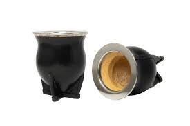

Mates Camioneros
El mate camionero es el más popular de Argentina. Su forma redonda y tamaño generoso lo hacen ideal para quienes disfrutan de cebadas largas y abundantes. Hecho de calabaza curada con aro y base de alpaca, acompaña cada jornada con la fuerza del trabajo y la camaradería.
Características
- Calabaza curada naturalmente
- Aro y base de alpaca o acero inoxidable
- Capacidad: 200 a 300 ml
- Apto para todo tipo de yerba
$85.000